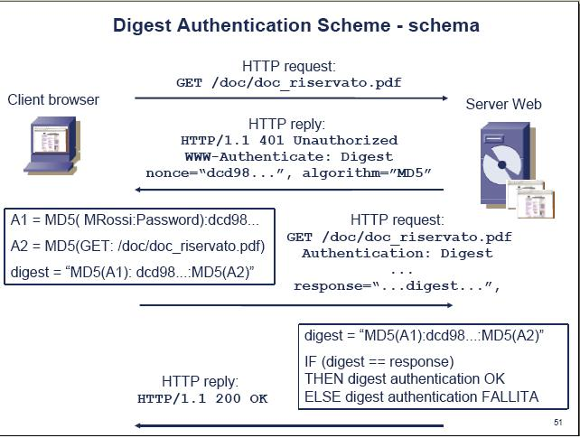
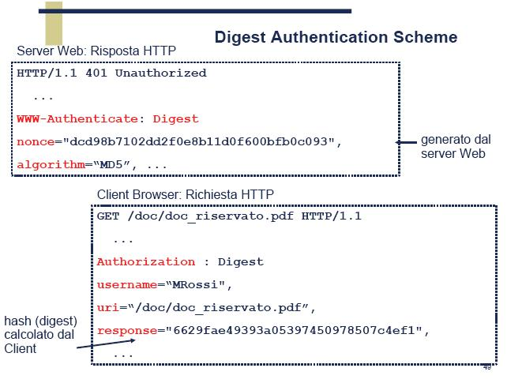

Torna alla pagina di Sistemi per l'elaborazione delle informazioni
:: Temi d'esame di Sistemi - 11/11/2005 ::
Scrivete lo pseudocodice e le chiamate alla socket library necessarie per realizzare un semplice WWW client con i seguenti requisiti:
SOLUZIONE
Schema riassuntivo dello pseudocodice:
Pseudocodice:
LATO CLIENT
//suppongo che il nome del mio host sia nella posizione 1 dell’array e che il numero di porta sia nella posizione 2
nome=parametro[1]
porta=parametro[2]
//creo il socket sockid
int sockid = socket (PF_INET, SOCK_STEAM, IPPORTO_TCP)
//costruisco la struct sockaddr_in , sockaddr pecifica per IP che qui chiamo destinazione
struct destinazione{ //per brevità usiamo l'assegnamento
destinazione.sin_famyly = AF_INET;
destinazione.sin_port = porta ; // numero di porta
destinazione.sin_addr = gethostbyname(nome); //nome dell’host
}
//CONNECT
status = connect (sockid, destinazione, NULL)
//controllo lo stato : se lo stato è =0 va tutto bene altrimenti mando un msg di errore ed esco
If (status = = -1){
print(“Errore”);
exit(-1);}
//definisco una string richiesta che contiene la prima linea di una richiesta http e la string risposta
string richiesta =”GET” + nome + “HTTP/1.1 \n” + “connection: close”
//per poter ricevere il file devo avere un buffer (risposta)che lo contenga
string risposta;
//RECEIVE
recv (sockid, risposta, strlenght, 0)
if (risposta != “http/1.1 200 OK”)
recv (sockid, risposta, strlenght, 0)
//creo la stringa type che dovrà contenere il valore di content-type e la variabile lunghezza che dovrà contenere il valore di content-lenght
string type= parse(risposta, “content-type”);
int lunghezza = parse (risposta, “content-lenght”);
//creo il buffer buffer lungo quanto il mess di risposta (lunghezza)
Char buffer = new char[lunghezza]
recv (sockid, buffer, lunghezza, 0)
Status =close(sockid);
if (status = = -1”)
//suppongo che il file da inviare si chiami temporaneo.temp e che si trovi nella cartella temp (/temp/temporaneo.temp)
//creo il file temporaneo (basta un commento)
create newFileTemp= FileTemporaneo
//quindi copio o caratteri in una variabile stringa "cont" fino ai caratteri "/n"
string cont =copiaCaratteri (FileTemporaneo);
//utilizzo uno switch per scrivere un una stringa "comando" il nome del viewer da aprire a seconda del contenuto del "cont"
switch (cont){
-->case=”text.html”
else comando=notepad;}
//aggiungo a comando il percorso e il nome del file
comando = comando + “/temp/temporaneo.temp”;
execute(comando);
return(0);
CHE BELLO QUESTO PSEUDO COSI' PSYCO!
Quake
Sun XDR converte i dati nello standard big-endian prima di trasmetterli. Spiegate in cosa consiste questa conversione attraverso un esempio. (opzionale) Discutete vantaggi e svantaggi di questa tecnica rispetto a Receiver Makes it Right e CORBA CDR
SOLUZIONE
I dati possono essere big-endian e little-endian, questi due standard consistono in un differente ordinamento dei byte. Little-endian ordina prima i byte meno significativi (ex: 12.40.119.128) mentre big-endian ordina prima i byte più significativi (ex: 128.119.40.12).
Un host può utilizzare entrambi gli ordinamenti, mentre la rete utilizza solo l’ordinamento big-endian quindi è necessario fare una conversione nell’ordine dei byte della rete prima di trasmettere (Marshalling) e un'altra conversione nel momento della ricezione(Unmarshalling). Questo processo si può schematizzare in questo modo: marshalling --> trasmissione --> ricezione --> unmarshalling
NOTA: se una macchina è già big-endian queste conversioni non fanno nulla.
Vedi slide DAM_U4_U1_L5
Con riferimento allo scambio http che segue, spiegate (1) la richiesta http (2) tutti i campi della risposta e il loro significato.
% telnet www.crema.unimi.it 80
Trying 157.99.64.12...
Connected to www.crema.unimi.it.
Escape character is '^]'.
HEAD /formation/infobio/web/course/data/page1.html HTTP/1.0
HTTP/1.1 200 OK
Date: Tue, 24 Feb 2004 18:01:05 GMT
Server: Apache/1.3.26 (Unix) mod_perl/1.24_01 mod_ss1/2.8.10 OpenSSL/0.9.5a
Last-Modified: Tue, 18 Feb 2005 14:38:31 GMT
ETag: "101e6a1-cd-3e5237be"
Accept-Ranges: bytes
Content-Lenght: 205
Connection: close
Content-Type: text/html; charset=iso-8859-1
SOLUZIONE
Richiesta http:
Esegue una connessione telnet al sito www.crema.unimi.it sulla porta 80.
Una volta connesso il carattere di terminazione è ‘^]’ che corrisponde all’…..
Il metodo HEAD è uguale al GET (richiede qualunque oggetto che sia stato identificato dalla URL di richiesta), ma il server non deve includere un messaggio nel body della risposta quindi restituisce solo i campi dell'header.
Campi della risposta:
http/1.1: indica il protocollo e la sua versione.
200 OK: significa che la richiesta è andata a buon fine e l’oggetto richiesto è incluso nella risposta.
NOTA: il numero è lo status code, mentre ok è lo status message, rappresentano la stessa informazione, ma una sotto forma di numero, l’altra sotto forma di messaggio.
Date: data di creazione della risposta
Server: tipo di Web Server
Last-Modified: data dell’ultima modifica dell’oggetto richiesto
ETag: identificativo della pagina, se la pagina cambia, cambia anche questo valore
Accept-Ranges: specifica quale tipo di contenuto questo server supporta, che tipo di range può accettare. I valori previsti sono: bytes e none
Content-Length: dimensioni in bytes della risposta
Connection: close indica una connessione non persistente
Content-Type: tipo dell’oggetto contenuto nell’Entity Body, nel corpo della risposta.
In questo caso testo di tipo html e codifica iso-8859-1
SOLUZIONE
1.
Challenge Handshake Authentication Protocol (CHAP)
Il protocollo Challenge Handshake Authentication Protocol (CHAP)) è un metodo di autenticazione ampiamente supportato che prevede l'invio di una rappresentazione della password dell'utente, anziché della password stessa, durante il processo di autenticazione. Tramite questo protocollo, il server di accesso remoto invia una richiesta di verifica al client di accesso remoto. Il client di accesso remoto utilizza un algoritmo hash, detto anche funzione hash, per calcolare un risultato hash MD5 (Message Digest-5) basato sulla richiesta di verifica e un risultato hash calcolato dalla password dell'utente. Il client di accesso remoto invia il risultato hash MD5 al server di accesso remoto, il quale, potendo accedere anche al risultato hash della password dell'utente, esegue lo stesso calcolo utilizzando l'algoritmo hash e confronta il risultato con quello inviato dal client. Se i risultati coincidono, le credenziali del client di accesso remoto vengono considerate autentiche. Un algoritmo hash fornisce una crittografia unidirezionale. In tal modo, il calcolo del risultato hash per un blocco di dati risulta semplice, mentre è matematicamente impossibile determinare il blocco di dati originale a partire dal risultato hash.


(from Microsoft and Roberto Sassi)
2.
Il portmapper RPC è un demone che agisce sulla porta 111 e che converte i numeri del programma RPC in numeri di porta del protocollo TCP/IP (o UDP/IP). Deve essere in funzione al fine di eseguire chiamate RPC ai server RPC su quella macchina. Quando un server RPC è in esecuzione, comunica a portmap su quale numero di porta è in ascolto e quali numeri di programmi RPC è pronto a servire. Quando un client desidera fare una chiamata RPC ad un dato numero di programma, prima contatta portmap sulla macchina server al fine di determinare il numero della porta dove i pacchetti RPC potranno essere inviati.
3.
Una query diretta si ha quando passo un NOME al DNS, e questi mi risponde con un indirizzo IP: è la risoluzione del nome.
Una query inversa invece la ottengo passando un indirizzo IP al DNS, e ricevendo il nome associato a quell'indirizzo: è la risoluzione inversa.
Il comando nslookup è abbastanza furbo da interpretare ciò che gli viene passato come argomento. Se gli passo un nome di sito, mi restituisce l'IP. Se gli passo un IP, mi restituisce il nome di quel sito.
Esempio:
nslookup 159.149.70.1
Torna alla pagina di Sistemi per l'elaborazione delle informazioni